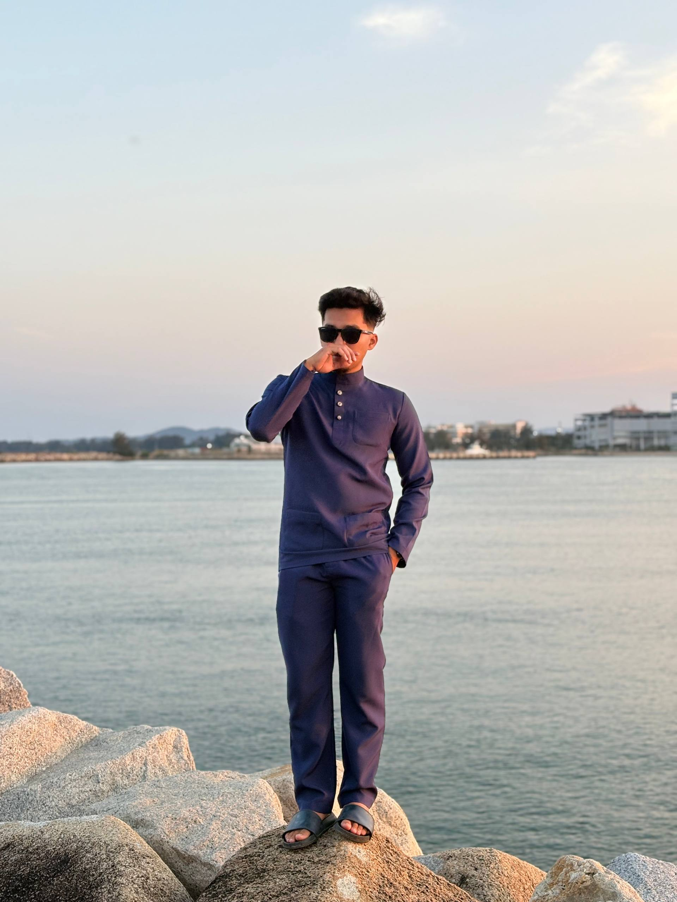

Education & Qualifications
Universiti Sultan Zainal Abidin (UniSZA)
Bachelor of Information Technology (Hons)
Focusing on Software Engineering & Multimedia Pipelines.
Hi, I'm Muhammad Haziq Bahzi Bin Asmawi. I am an IT student currently pursuing my studies at Universiti Sultan Zainal Abidin (UniSZA), focusing on software development, multimedia applications, and creative immersive technologies.
My academic journey has provided me with a strong foundation in software engineering, object-oriented programming, and databases. Beyond core development, my true passion lies in multimedia systems—specifically in 3D character animation, environment design, and building interactive Virtual Reality experiences.

Universiti Sultan Zainal Abidin (UniSZA)
Bachelor of Information Technology (Hons)
Focusing on Software Engineering & Multimedia Pipelines.
• Development: Web Development, OOP, Databases
• Multimedia & 3D: Blender, Unity Engine, 3D Animation
• Production: Digital Audio & Video Editing
Deep diving into agile methodologies, relational database architectures, and structured system designs to build scalable software applications.
Hands-on experience in post-production audio synchronization, cinematic video editing, and optimizing custom 3D asset pipelines for interactive virtual environments.